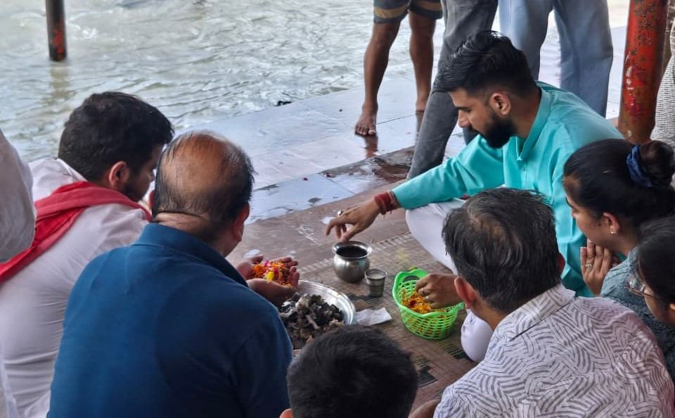

Jaankari
Asthi Visarjan Kya Hai Aur Kyu Zaroori Hai

Asthi Visarjan kya hai?
Mrityu ke baad vyakti ki asthiyon ko pavitra nadi Maa Ganga me visarjit kiya jata hai, jisse atma ko shanti milti hai aur karm-bandhan se mukti ki kamna ki jati hai.

Haridwar me Asthi Visarjan kyu?
Haridwar moksh nagri mani jati hai. Yahan asthi visarjan karne se pitron ko sadgati milti hai — yahi karan hai ki desh bhar se log Haridwar aakar hi yeh karm sampann karte hain.
Asthi Visarjan ki vidhi
Anubhavi Tirth Purohit dwara mantra uccharan ke saath poori vaidik vidhi se karm sampann kiya jata hai, jisme sankalp, tarpan aur visarjan shamil hain.